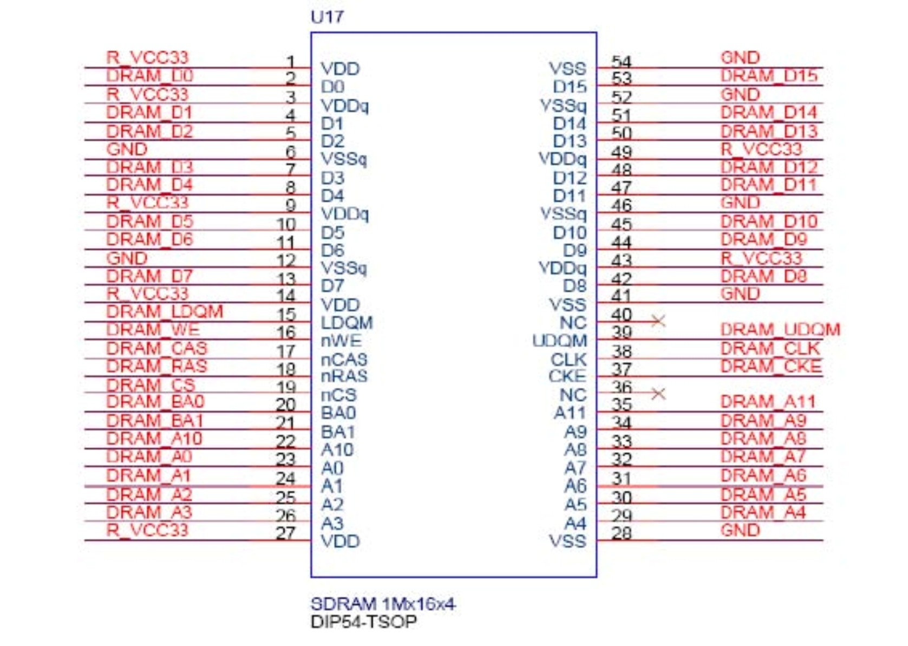
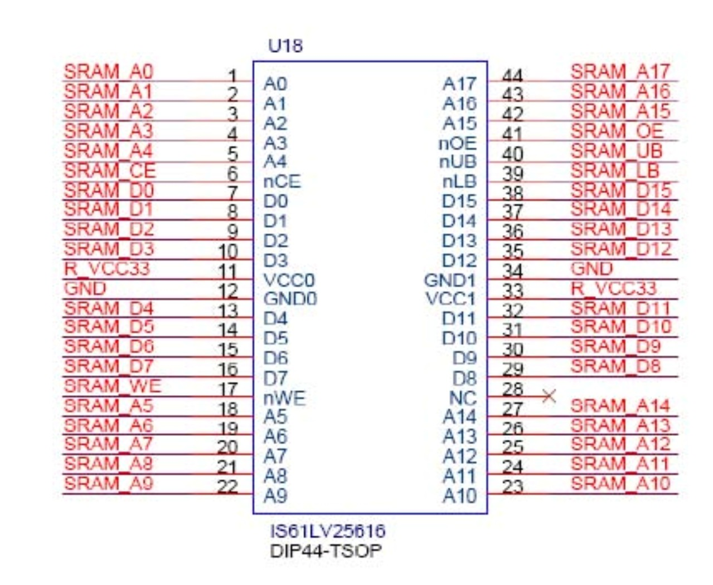
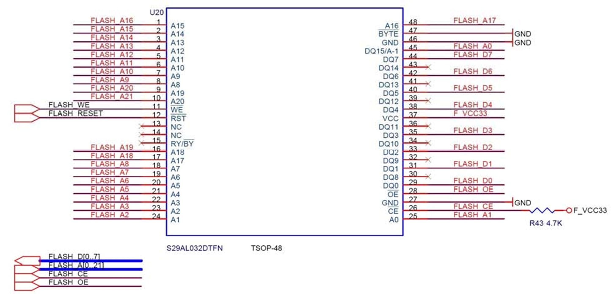

The DE2 board provides an 8-Mbyte SDRAM, 512-Kbyte SRAM, and 4-Mbyte (1-Mbyte on some boards) Flash memory. Figures 1, 2, and 3 show the schematics of the memory chips. The pin assignments for each device are listed in Table 1. The datasheets for the memory chips are provided in the references.

Figure 1. SDRAM schematic.

Figure 2. SRAM schematic.

Figure 3. Flash schematic.
Table 1. Signal assignments for the memory chips.
| Signal Name | Description |
|---|---|
| DRAM_ADDR[11:0] | SDRAM Address[11:0] |
| DRAM_DQ[15:0] | SDRAM Data[15:0] |
| DRAM_BA_0 | SDRAM Bank Address[0] |
| DRAM_BA_1 | SDRAM Bank Address[1] |
| DRAM_LDQM | SDRAM Low-byte Data Mask |
| DRAM_UDQM | SDRAM High-byte Data Mask |
| DRAM_RAS_N | SDRAM Row Address Strobe |
| DRAM_CAS_N | SDRAM Column Address Strobe |
| DRAM_CKE | SDRAM Clock Enable |
| DRAM_CLK | SDRAM Clock |
| DRAM_WE_N | SDRAM Write Enable |
| DRAM_CS_N | SDRAM Chip Select |
| Signal Name | Description |
|---|---|
| SRAM_ADDR[17:0] | SRAM Address[17:0] |
| SRAM_DQ[15:0] | SRAM Data[15:0] |
| SRAM_WE_N | SRAM Write Enable |
| SRAM_OE_N | SRAM Output Enable |
| SRAM_UB_N | SRAM High-byte Data Mask |
| SRAM_LB_N | SRAM Low-byte Data Mask |
| SRAM_CE_N | SRAM Chip Enable |
| Signal Name | Description |
|---|---|
| FL_ADDR[21:0] | FLASH Address[21:0] |
| FL_DQ[7:0] | FLASH Data[7:0] |
| FL_CE_N | FLASH Chip Enable |
| FL_OE_N | FLASH Output Enable |
| FL_RST_N | FLASH Reset |
| FL_WE_N | FLASH Write Enable |
See DE2_pin_assignments.csv, a comma-delimited file that matches "standard" descriptive names to actual FPGA pin locations. This file can be directly opened in Microsoft Excel.
DE2 User Manual, version 1.4, 2006. (pdf)
Maintained by John Loomis, last updated 28 April 2007